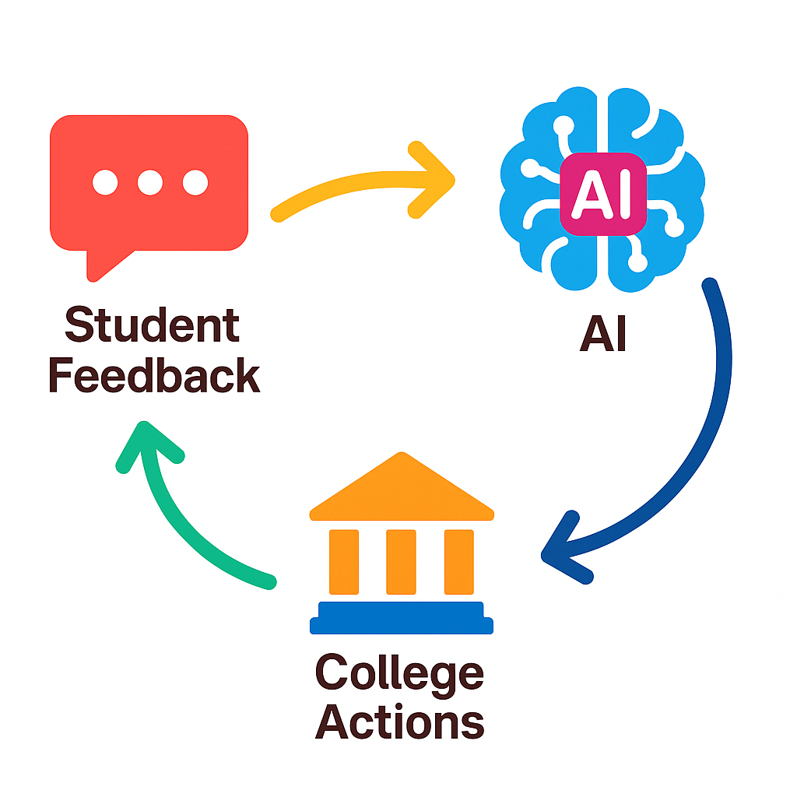

Turning Student Voices into Actionable Insights: Using AI to Analyze Survey Comments
Planning & Research Analyst Senior, Paradise Valley Community College
Planning & Research Director, Paradise Valley Community College
Institutional Data
- How many students are currently enrolled?
- What’s the course success rate?
- How do students perceive their college experiences?
- Why do students drop out?

Why Bring AI Into Survey Comment Analysis?
Shorten the Feedback Cycle
- Act on feedback faster
- Collect more feedback, more often

Example: RNL Survey
- The Ruffalo Noel Levitz (RNL) organization conducts the Student Satisfaction Inventory (SSI) survey.
- It was recently administered at MCCCD in Spring 2025.
- We received 122 open-ended comments from PVCC students.
Step 1: Prepare Data
- Keep the tabular format
- Remove all other columns
- Assign index
| index | comment |
|---|---|
| 1 | XXXXXXXXX |
| 2 | XXXXXXXXX |
| 3 | XXXXXXXXX |
Step 1: Prepare Data
| index | comment |
|---|---|
| 1 | Ana and Christie are amazing and made my experience so much better than I expected! They went above and beyond always! |
| 2 | My advolisor really helped me decipher the schedule code. I did have to withdraw from a class due to not enough information and really bad instruction. But so far my other classes have been great. I wish there were more night classes in person. And the gym not being open long is not great. I feel like every time I cone to campus to resolve an issue the area I need is closed. Bookstore hours are not friendly to my full time working schedule. |
| 3 | The quality of teachers at PVCC is really great and I love that the smaller class sizes allow for more one on one student teacher connection. The only poor experience I've had is limited class options for upper level classes in my major, sometimes I'll sign up for a class and a week before the semester starts the class will be cancelled and I'll have to change my schedule around last minute. |
Step 2: Remove Personally Identifiable Information
| index | comment |
|---|---|
| 1 | [PERSON] and [PERSON] are amazing and made my experience so much better than I expected! They went above and beyond always! |
| 2 | My advolisor really helped me decipher the schedule code. I did have to withdraw from a class due to not enough information and really bad instruction. But so far my other classes have been great. I wish there were more night classes in person. And the gym not being open long is not great. I feel like every time I cone to campus to resolve an issue the area I need is closed. Bookstore hours are not friendly to my full time working schedule. |
| 3 | The quality of teachers at PVCC is really great and I love that the smaller class sizes allow for more one on one student teacher connection. The only poor experience I've had is limited class options for upper level classes in my major, sometimes I'll sign up for a class and a week before the semester starts the class will be cancelled and I'll have to change my schedule around last minute. |
Step 3: Write a Prompt
“You are analyzing open-ended comments from a student satisfaction survey.
Task 1: Determine the overall perception of each comment toward the college. Choose one of the following categories: (a) positive, (b) negative, (c) neutral, or (d) mixed.
Task 2: Identify the topics mentioned in each comment. Use clear and descriptive labels such as advising, class availability, faculty, etc. Please create new topic labels as needed. List all relevant labels, separated by commas, such as ‘advising, class availability’.
Return the results in a table with the following three columns: index, perception, and labels.”
Step 4: Send the Prompt to ChatGPT
| Direct use | Programmatic use | |
|---|---|---|
| How to use | Chat in the web interface or app. | Make an API call through a script (sample R code) |
| Setup | Create an account or sign in to ChatGPT and choose a plan (Free/Plus/Business). | Create an account or sign in to OpenAI Platform, get an API key, and load some credits |
| Privacy | Turn off Improve the model for everyone in settings if using a free or Plus plan | Not used for training models by default |
| Cost | Per-user subscription ($20/month for Plus; $25 or $30/month for Business) | Usage-based |
Step 5: Review Results
| index | comment | perception | labels |
|---|---|---|---|
| 1 | [PERSON] and [PERSON] are amazing and made my experience so much better than I expected! They went above and beyond always! | positive | faculty |
| 2 | My advolisor really helped me decipher the schedule code. I did have to withdraw from a class due to not enough information and really bad instruction. But so far my other classes have been great. I wish there were more night classes in person. And the gym not being open long is not great. I feel like every time I cone to campus to resolve an issue the area I need is closed. Bookstore hours are not friendly to my full time working schedule. | mixed | advising, class availability, class instruction, campus facilities, bookstore hours |
| 3 | The quality of teachers at PVCC is really great and I love that the smaller class sizes allow for more one on one student teacher connection. The only poor experience I've had is limited class options for upper level classes in my major, sometimes I'll sign up for a class and a week before the semester starts the class will be cancelled and I'll have to change my schedule around last minute. | mixed | faculty, class availability |
Repeat Step 3-5 As Needed
Revise the Prompt for Desired Labeling
“You are analyzing open-ended comments from a student satisfaction survey. Your task is to code each comment using none, one, or more of the following standardized labels:
Campus Climate – Comments about the general environment or sense of belonging on campus (e.g., feeling cared for, welcomed, respected, or included).
Advising – Comments about academic advising, advisor helpfulness, or access to advisors.
Classes/Schedules – Comments about class offerings, availability, scheduling, or course registration timing.
Faculty/Instruction – Comments about instructors, teaching quality, or classroom experiences.
Facilities – Comments about physical campus resources such as parking lots, gyms, cafeterias, buildings, or classrooms.
Academic Program – Comments about specific academic programs or majors (e.g., Nursing, Music, Education).
Admissions/Registration – Comments about enrollment, admissions, or registration processes.
Other Services – Comments about campus services other than Advising or Admissions/Registration, such as Veterans Services, Counseling, Athletics, Library, Tutoring, Career Services, Disability Services, or Student Clubs.
Instructions: Please do not create new labels. If a comment fits multiple labels, include all relevant ones separated by commas, such as ‘Campus Climate, Academic Program’. The output should be a table with two columns: index and labels.”
Repeat Step 3-5 As Needed
Check Results Again
| index | comment | labels |
|---|---|---|
| 1 | [PERSON] and [PERSON] are amazing and made my experience so much better than I expected! They went above and beyond always! | Campus Climate |
| 2 | My advolisor really helped me decipher the schedule code. I did have to withdraw from a class due to not enough information and really bad instruction. But so far my other classes have been great. I wish there were more night classes in person. And the gym not being open long is not great. I feel like every time I cone to campus to resolve an issue the area I need is closed. Bookstore hours are not friendly to my full time working schedule. | Advising, Classes/Schedules, Facilities |
| 3 | The quality of teachers at PVCC is really great and I love that the smaller class sizes allow for more one on one student teacher connection. The only poor experience I've had is limited class options for upper level classes in my major, sometimes I'll sign up for a class and a week before the semester starts the class will be cancelled and I'll have to change my schedule around last minute. | Faculty/Instruction, Classes/Schedules |
Questions
Activity Step 1: Let’s Collect Data
What’s your experience of and opinions about using AI for text-based tasks at work? Take five minutes to fill out the Google Form. Write in details but do not include private information.
Activity Step 2: Practice Writing Prompts
Write a prompt in a group or individually using the survey data we just collected to answer a question you are curious about. When you’re ready, submit your prompt here.